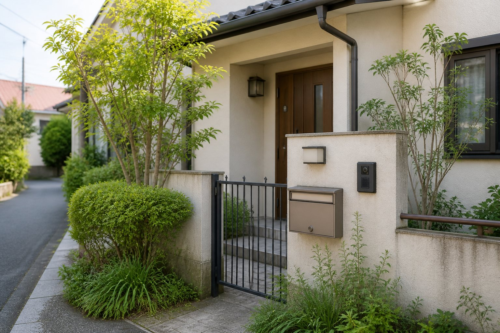

2026-11-14｜防犯・住まい
玄関と窓から、住まいの防犯を見直しませんか
顔が見えるインターホンと窓のフィルム。三鷹市の補助制度も活用して、住まいの安心を整えませんか。
2026-11-14｜防犯・住まい
顔が見えるインターホンと窓のフィルム。三鷹市の補助制度も活用して、住まいの安心を整えませんか。

ボランティアで地域のお宅を訪問していると、インターホンが壊れていたり、「ピンポン」と音が鳴るだけのお宅に出会うことがあります。
誰が来たのか確認するために、玄関を開けたり、外に顔を出したりすることも。顔が見えるインターホンなら、玄関を開ける前に相手を確認し、用件を聞くことができます。
ご自身や、離れて暮らすご家族のお宅も、一度確認してみませんか。
三鷹市では、モニター付きインターホンの取付けや防犯フィルムの貼付けに、対象費用の半額、上限25,000円の補助があります。
申請期限は2027年2月26日。複数の設備を合わせても上限は25,000円です。過去の受給状況などの条件があり、予算によって早期終了する場合もあります。
窓には、防犯性能と飛散防止性能を備えたフィルムを貼る方法があります。侵入に時間をかけさせ、ガラスが割れたときの破片の飛び散りを抑えます。遮熱性能のある製品なら、日差しによる暑さも和らげられます。
フィルムは種類によって性能が異なります。みたか暮らし相談室では、施工実績が豊富な専門家をご紹介します。
インターホンの交換や窓の対策など、気になることがありましたら、まずはお気軽にご相談ください。
みたか暮らし相談室へ相談する※補助制度は2026年11月14日確認。